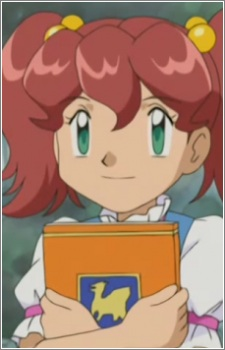
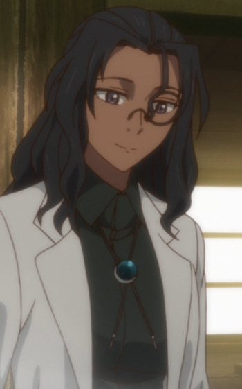

|  |
Calista |
- Pokemon Advanced Generations
|
Calista is a girl who Ash and Co. met in the Hoenn region. She appeared to be very enthusiastic about archeology and Pokemon. |
 |
Gracia Hughes |
- Fullmetal Alchemist
- Fullmetal Alchemist: The Conqueror of Shamballa
|
Gracia Hughes is Mae Hughes's wife and Elicia Hughes's mother. She is kind and caring person. |
 |
Maki Matsumoto |
- Cardcaptor Sakura
- Cardcaptor Sakura Movie 1
- Cardcaptor Sakura Movie 2: The Sealed Card
|
Maki Matsumoto is the owner of a stuffed doll shop called Twin Bells. She is very inviting and friendly. |
|  |
Rahab |
|
Rahab is a Mage who is Lindel's magic teacher. She is fond of giving names. |
 |
Usagi Tsukino |
- Sailor Moon
- Sailor Moon R
- Sailor Moon R: The Movie
- Sailor Moon R: Make-Up! Sailor Senshi
- Sailor Moon S
- Sailor Moon S: The Movie
- Sailor Moon Super S: The Movie
- Sailor Moon Super S
- Sailor Moon Super S Plus: Ami's First Love
- Sailor Moon Super S Special
- Sailor Moon Sailor Stars
- Sailor Moon Sailor Stars: Hero Club
- Sailor Moon Memorial
- Sailor Moon R Memorial
- Sailor Moon S Memorial
- Sailor Moon Super S Memorial
- Sailor Moon Sailor Stars Memorial
- Pretty Guardian Sailor Moon Crystal
- Pretty Guardian Sailor Moon Crystal (2016)
|
Usagi Tsukino is a carefree schoolgirl with an enormous capacity for love. Her alter ego is Sailor Moon. She cares deeply about her friends and family. She is a bit selfish, very lazy, clusmy and a crybaby. She is very trusting and believes that everyone has a better nature. |